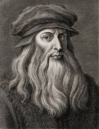
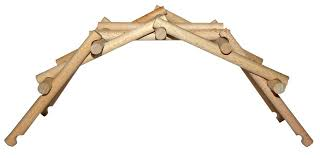
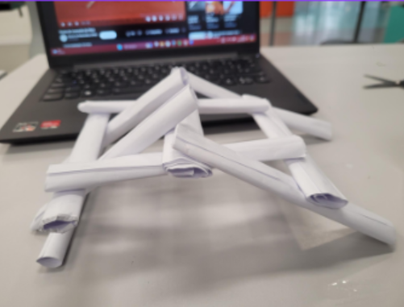

Ponte Autoportante de Da Vinci
Clientes: Pedro Alves, Andrei Kohls, Gabriel Ludwig, Pedro Backes
Quem Foi Da Vinci?
Leonardo da Vinci foi um polímata italiano, nascido em 15 de abril de 1452, em Anchiano, Itália, e falecido em 2 de maio de 1519, em Clos Lucé, Amboise, França. Ele é considerado uma das figuras mais importantes do Alto Renascimento, conhecido por sua genialidade em diversas áreas, como ciência, matemática, engenharia, invenção, anatomia, pintura, escultura e arquitetura.
O Que é a Ponte Autoportante?
A ponte autoportante, também conhecida como "ponte sem pregos" ou "ponte de encaixe", é um dos muitos projetos inovadores de Leonardo da Vinci. Foi concebida como uma estrutura temporária que poderia ser montada rapidamente por exércitos ou em situações de emergência. A característica mais marcante desta ponte é que ela não requer pregos, parafusos ou qualquer tipo de fixação permanente. Em vez disso, a ponte usa a força da gravidade e o atrito entre as partes de madeira para se sustentar.
Nosso Resultado
O objetivo principal da ponte autoportante era ser utilizada em operações militares, pois poderia ser montada rapidamente e desmontada com a mesma facilidade, permitindo a passagem de tropas e equipamentos sobre rios e outros obstáculos. No nosso trabalho fizemos uma versão alternativa e usamos papel enrolado como base de sustentação.